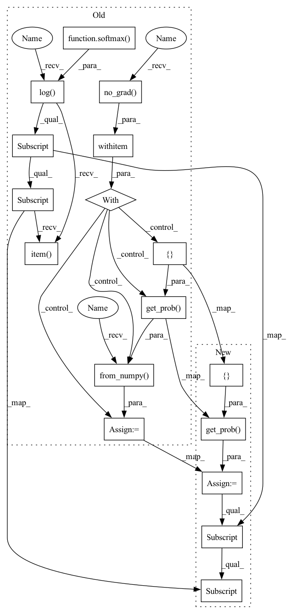

Pattern ID :36046
Before Change
for i in range(len(inputs)):
tempinputs = inputs[:] // ////
tempinputs[i] = self.config["unk"]
with torch.no_grad() :
tempoutput = torch .from_numpy( clsf.get_prob([ " ".join(tempinputs))) // ////
softmax = torch.nn.Softmax(dim=1)
nll_lossed = -1 * torch.log(softmax(tempoutput))[0][y_orig].item()
losses[i] = nll_lossed // ////
return losses
def temporal(self, clsf, inputs, y_orig):After Change
for i in range(len(inputs)):
tempinputs = inputs[:] // ////
tempinputs[i] = self.config["unk"]
tempoutput = clsf.get_prob([ " ".join(tempinputs))
losses[i] = 1 - tempoutput[0][y_orig]
return losses
def temporal(self, clsf, inputs, y_orig):
losses1 = np.zeros(len(inputs))In pattern: SUPERPATTERN
Frequency: 3
Non-data size: 17
Instances Fragment ID: 102339016
Project Name: thunlp/openattack
Commit Name: 12fe3c55ac8892fa51226fed839c2c3aa74fc81b
Time: 2020-08-15
Author: zhangtingji18@163.com
File Name: OpenAttack/attackers/deepwordbug.py
M Class Name: DeepWordBugAttacker
N Class Name: DeepWordBugAttacker
M Method Name: replaceone(4)
N Method Name: replaceone(4)
M Parent Class: Attacker
N Parent Class: Attacker
M File Name: OpenAttack/attackers/deepwordbug.py
N File Name: OpenAttack/attackers/deepwordbug.py
M Start Line: 99
M End Line: 103
N Start Line: 94
N End Line: 95
Before Change
dloss = torch.zeros(len(inputs))
for i in range(len(inputs)):
tempinputs = inputs[i:]
with torch.no_grad() :
tempoutput = torch.from_numpy( clsf.get_prob([ self.config["processor"].detokenizer(tempinputs)))
losses1[i] = -1 * torch.log(softmax(tempoutput))[0][y_orig].item()
for i in range(1, len(inputs)):
dloss[i] = abs(losses1[i] - losses1[i - 1])
return dloss
After Change
dloss = np.zeros(len(inputs))
for i in range(len(inputs)):
tempinputs = inputs[i:]
tempoutput = clsf.get_prob([ self.config["processor"].detokenizer(tempinputs))
losses1[i] = 1 - tempoutput[0][y_orig]
for i in range(1, len(inputs)):
dloss[i] = abs(losses1[i] - losses1[i - 1])
return dloss
Fragment ID: 102339018
Project Name: thunlp/openattack
Commit Name: 12fe3c55ac8892fa51226fed839c2c3aa74fc81b
Time: 2020-08-15
Author: zhangtingji18@163.com
File Name: OpenAttack/attackers/deepwordbug.py
M Class Name: DeepWordBugAttacker
N Class Name: DeepWordBugAttacker
M Method Name: temporaltail(4)
N Method Name: temporaltail(4)
M Parent Class: Attacker
N Parent Class: Attacker
M File Name: OpenAttack/attackers/deepwordbug.py
N File Name: OpenAttack/attackers/deepwordbug.py
M Start Line: 124
M End Line: 132
N Start Line: 114
N End Line: 115
Before Change
dloss = torch.zeros(len(inputs))
for i in range(len(inputs)):
tempinputs = inputs[: i + 1]
with torch.no_grad() :
tempoutput = torch.from_numpy( clsf.get_prob([ self.config["processor"].detokenizer(tempinputs)))
losses1[i] = -1 * torch.log(softmax(tempoutput))[0][y_orig].item()
print(self.config["processor"].detokenizer(tempinputs), losses1[i])
for i in range(1, len(inputs)):
dloss[i] = abs(losses1[i] - losses1[i - 1])
return dlossAfter Change
dloss = np.zeros(len(inputs))
for i in range(len(inputs)):
tempinputs = inputs[: i + 1]
tempoutput = clsf.get_prob([ self.config["processor"].detokenizer(tempinputs))
losses1[i] = 1 - tempoutput[0][y_orig]
for i in range(1, len(inputs)):
dloss[i] = abs(losses1[i] - losses1[i - 1])
return dloss
Fragment ID: 102339020
Project Name: thunlp/openattack
Commit Name: 12fe3c55ac8892fa51226fed839c2c3aa74fc81b
Time: 2020-08-15
Author: zhangtingji18@163.com
File Name: OpenAttack/attackers/deepwordbug.py
M Class Name: DeepWordBugAttacker
N Class Name: DeepWordBugAttacker
M Method Name: temporal(4)
N Method Name: temporal(4)
M Parent Class: Attacker
N Parent Class: Attacker
M File Name: OpenAttack/attackers/deepwordbug.py
N File Name: OpenAttack/attackers/deepwordbug.py
M Start Line: 108
M End Line: 117
N Start Line: 99
N End Line: 104